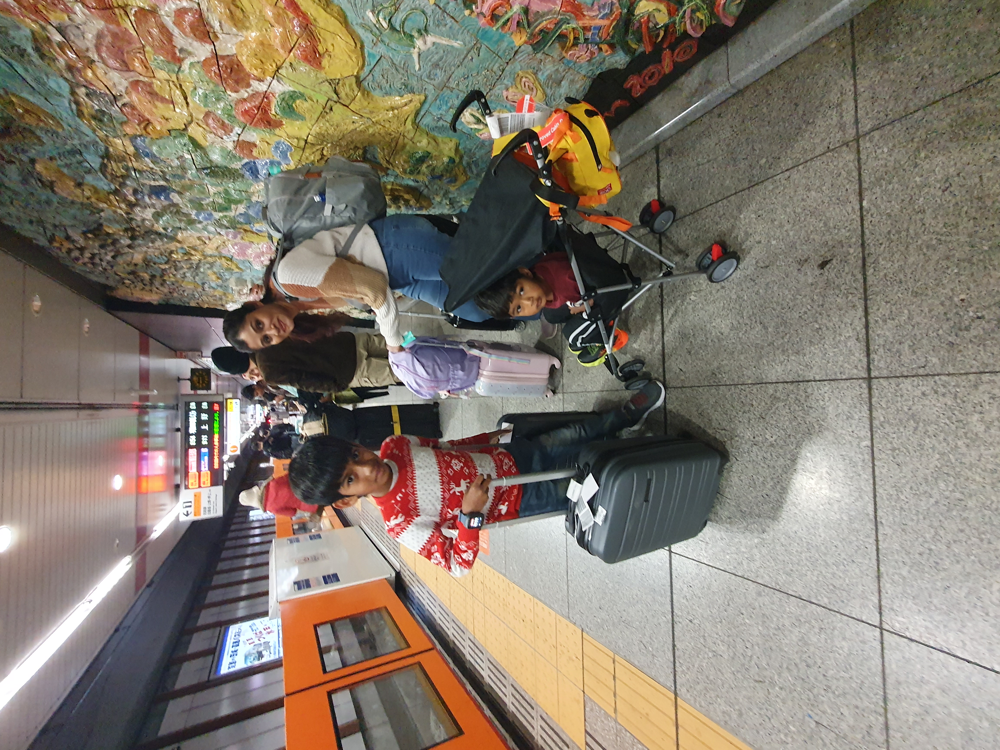
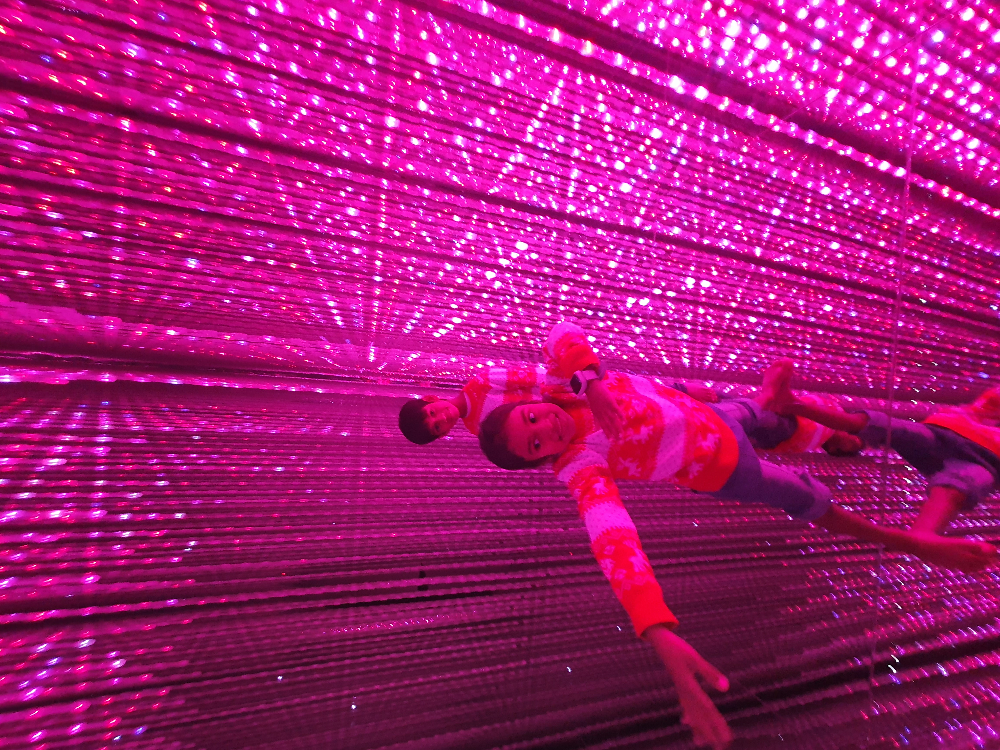
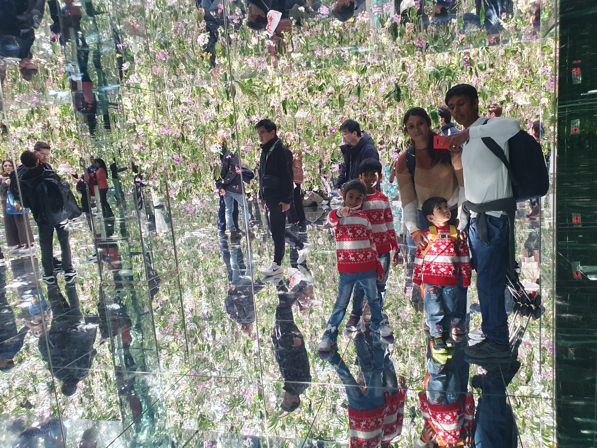
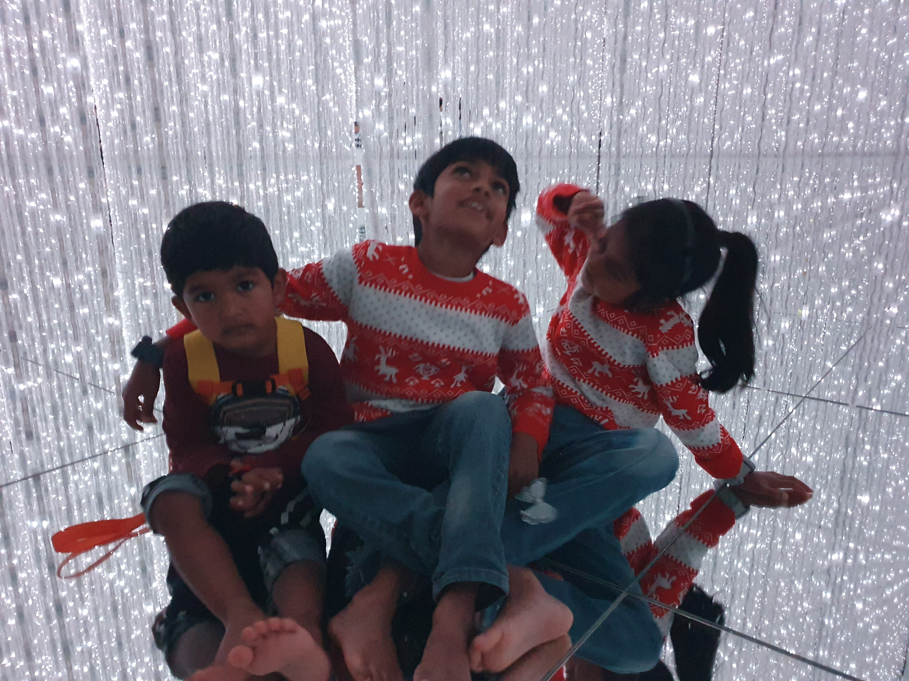
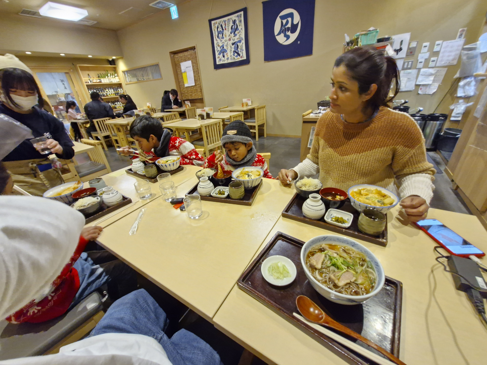
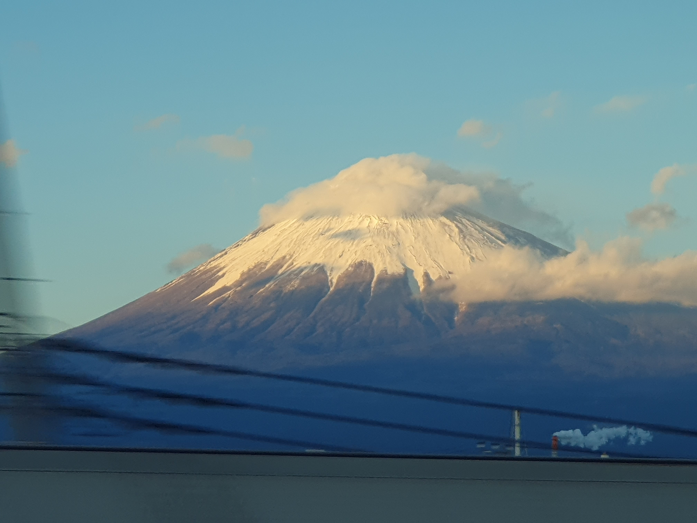
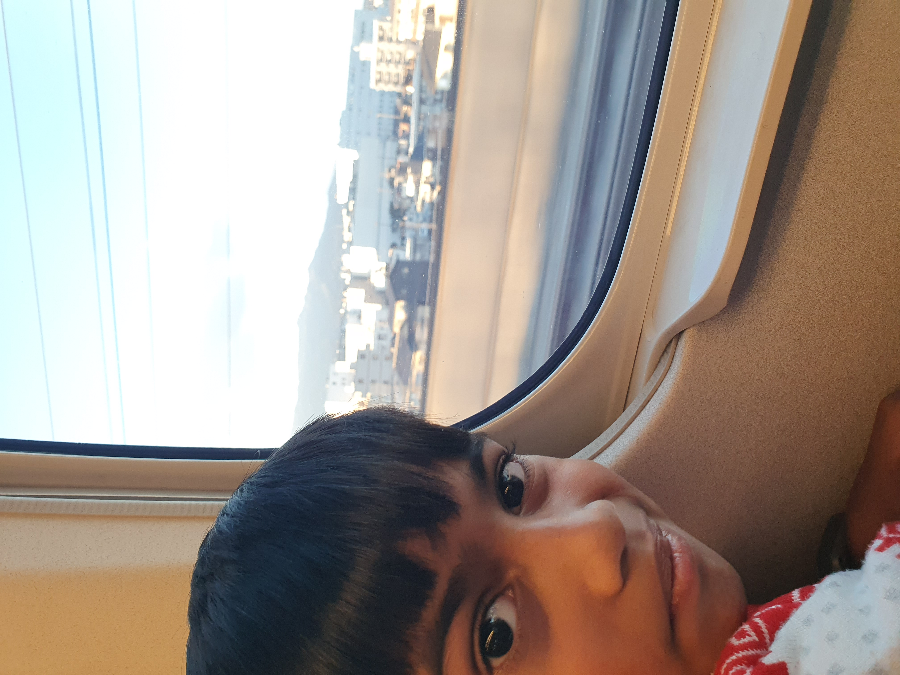

Day 2 of 11
Tokyo: teamLab & Shinkansen
A birthday surprise, immersive art, and the bullet train to Osaka
This is a packed arrival day — and my birthday! We landed at Narita in the morning, freshened up with a shower at Nine Hours capsule hotel inside the airport, then headed straight to teamLab Planets in Toyosu for one of the most magical experiences of the entire trip. Afterwards, we caught the Shinkansen bullet train to Osaka — arriving after dark in the January winter evening.



🎂 Birthday Surprise on the Flight
January 29th is my birthday — and my husband and kids had a surprise planned. During our Fiji airport transit the day before, they'd secretly bought a pendant for me from one of the duty-free shops. On the flight from Nadi to Tokyo, they pulled it out and surprised me mid-air. The Fiji Airways air hostesses joined in and sang happy birthday. It was the sweetest start to an incredible day — and one of those travel moments you never forget.
🚿 Nine Hours Narita — Shower Stop
After a long overnight flight, the last thing you want is to start sightseeing feeling groggy and grimy. Nine Hours is a capsule hotel chain inside Narita Airport that offers a shower-only plan — no need to book a room or a nap pod. You walk in, pay for a shower slot, get a fresh towel and amenities, and walk out feeling human again in about 20 minutes. It was a game-changer for us, especially with three kids who'd been on planes for hours. Clean clothes from the day kit, a hot shower, and we were ready to explore.

🎨 teamLab Planets — Toyosu, Tokyo
teamLab Planets is an immersive digital art museum where you walk barefoot through water, wade through knee-deep pools of light, and stand in rooms of infinite mirrors. It's unlike anything else — adults find it meditative, and kids are absolutely spellbound. Even our 3-year-old was mesmerised. You remove your shoes and roll up your trousers at the entrance, then follow a one-way path through a series of installations. The whole experience takes about 60–90 minutes.


💡 Guide Tips — teamLab Planets
- Book tickets online in advance — time slots sell out, especially weekends and holidays
- Wear shorts or clothes you can roll up — you'll be wading through water up to your knees
- Carry your toddler — the water rooms can be slippery; we carried our 3-year-old through the deeper parts
- Lockers provided — free lockers at the entrance for bags and shoes
- Phone in a waterproof pouch — you'll want photos, and splashes happen
- Note: teamLab Planets Toyosu closed permanently in late 2024. The alternative is now teamLab Borderless at Azabudai Hills — similar immersive art, different installations, no water-walking
🍜 Lunch near Tokyo Station
Set Menu Noodles & Miso Soup
After teamLab, we grabbed lunch somewhere near Tokyo Station before boarding the Shinkansen — a set menu with noodles and miso soup. Japanese set meals (teishoku) are perfect for families: everyone gets a balanced tray with a main, soup, and sides, and the kids can pick what they like. The area around the station is packed with options, and it's worth building in time for a proper sit-down meal rather than rushing onto the train hungry.

🚅 Shinkansen — Tokyo to Osaka
The Shinkansen (bullet train) is one of the highlights of any Japan trip. Tokyo to Osaka takes about 2.5 hours on the Tokaido Shinkansen, reaching speeds of 285 km/h. The trains are spotlessly clean, perfectly on time, and incredibly smooth. Kids love watching the countryside blur past. We were lucky enough to see Mt Fuji from the train — stunning even in the winter haze. Sit on the right side (seats D/E) heading west for the best view.


💡 Guide Tips — Shinkansen with Kids
- Two tickets needed: The Shinkansen requires two tickets — a base fare ticket (乗車券) and a seat reservation ticket (指定席券). Make sure you have both before boarding. With a JR Pass, the base fare is covered — you just need to get the seat reservation (free) at any JR ticket office
- Be on time: Shinkansen trains leave exactly on schedule — not a minute late. If your departure is 14:33, the doors close at 14:33. Be on the platform at least 10 minutes early, especially with kids
- Mt Fuji view — sit on the right: Heading west (Tokyo → Osaka), sit on the right side (seats D/E) for the best Mt Fuji views. The mountain appears about 40–50 minutes into the journey. We saw it clearly — unforgettable
- Japan Rail Pass: If you're doing Tokyo–Osaka–Kyoto–Tokyo, the 7-day JR Pass pays for itself. Children aged 6–11 get a half-price child pass; under 6 ride free (no reserved seat)
- Reserve seats together: Free with JR Pass at any JR ticket office. Get seats together — the train can be full
- Ekiben (station bento): Buy bento boxes at the station before boarding. Part of the bullet train experience
- Luggage: Overhead racks fit most carry-on bags — another reason hand luggage only is a game changer
- Arriving in Osaka after dark: In January, sunset is around 5 PM. If you arrive late, head straight to the hotel — we were exhausted after a packed day and went straight to bed
📋 Day Schedule
Morning: Arrive Narita Airport. Shower at Nine Hours capsule hotel (shower-only plan)
Late morning: Train to Toyosu. teamLab Planets (~90 min visit)
Afternoon: Train back to Tokyo Station. Lunch, then board Shinkansen to Osaka (~2.5 hrs)
Evening: Arrive Osaka. Check into hotel